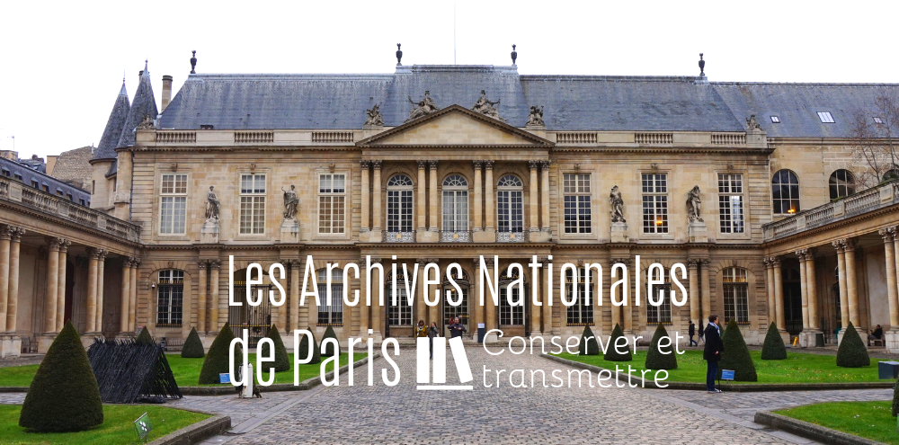
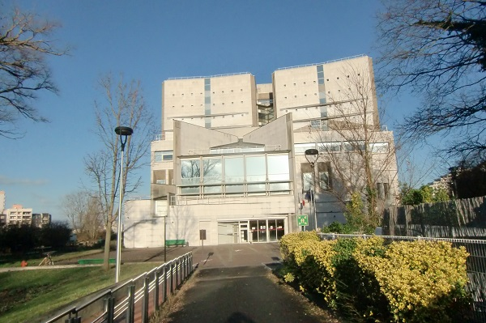
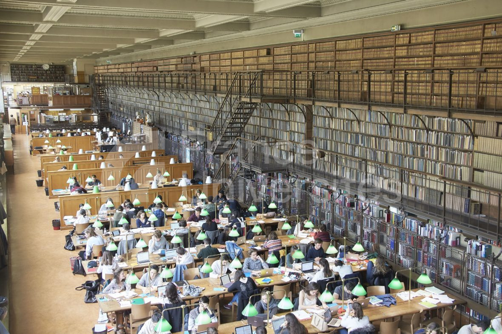

la Bibliothèque nationale de France interpelle autant par ses tours, des livres ouverts se regardant en chiens de faïence imaginés par Dominique Perrault, que par son impressionnant fonds de documents. Un paradis de 15 millions d'archives touchant à toutes les disciplines, réparti sur 3 000 places entre le haut-de-jardin, accessible à tous, et le rez-de-jardin, royaume des chercheurs.
Après des années de coûteux travaux, le site Richelieu, le berceau tricentenaire de la BnF situé dans le 2e, a rouvert ses portes en 2022. Outre la refonte architecturale et le nouveau musée, c’est surtout la monumentale salle Ovale de lecture, avec ses 18 mètres de hauteur coiffés d’une verrière, qui attire les regards et les lecteurs.
Bibliothèque interuniversitaire de la Sorbonne (BIS)
Une des plus vieilles et mythiques universités du monde pour l’une des plus belles bibliothèques de la capitale. Refaite au tournant des années 2010, la bibliothèque interuniversitaire de la Sorbonne et ses 250 ans au compteur (depuis 2020) détient près de 2 millions de documents imprimés, majoritairement en lettres et sciences humaines. Bémol : l’accès est coordonné au niveau d’études (L3 minimum), à la discipline suivie et à l’université de rattachement.
Bibliothèque Publique d'Information
Implantée au sein du Centre Georges-Pompidou, 10 400 mètres carrés de salles de lecture sur trois niveaux, abritant pas moins de 430 000 documents, dont 370 000 bouquins. Une vie ne suffirait pas à tout lire. Le catalogue de la BPI se démarque également avec son fonds cinéma documentaire, ses cartes et plans ainsi que ses ressources liées au son.
Les Archives à Paris
Plongez dans l'histoire fascinante de Paris en explorant ses archives riches en informations et en témoignages. Des documents précieux, des photographies d'archives et des artefacts vous permettent de remonter le temps et de découvrir les moments clés de l'histoire de la ville lumière.
Les Archives Nationales

Les Archives Nationales
établissement du ministère de la Culture, sont le plus grand centre d'archives d'Europe. Mémoire de la France, elles conservent et communiquent aux publics les archives de l'État depuis le Moyen Age, celles des notaires parisiens et des archives privées d'intérêt national.
Archives de la Ville de Paris

Archives de la Ville de Paris
Les Archives de Paris mettent à votre disposition un peu plus de 21,7 millions de pages de documents et d'images.
Pour bien utiliser les outils de consultation mis à votre disposition, reportez-vous à la rubrique aide. Les présentations en tête de chaque formulaire de recherche vous renseignent précisément sur les contenus mis en ligne.
Archives de l'Université de Paris

Archives de l'Université de Paris
Les Archives de l'Université de Paris constituent une autre ressource précieuse pour les chercheurs et les passionnés d'histoire. Conservant des documents relatifs à la prestigieuse université depuis ses débuts médiévaux, ces archives offrent un aperçu fascinant de l'évolution de l'éducation et du savoir à travers les âges.
En explorant ces archives remarquables, nous pouvons plonger dans les récits riches et variés qui façonnent l'identité de Paris et de sa communauté.🏝️✨
Le Conservatoire National Supérieur de Musique et de Danse de Paris (CNSMDP)
L'École Nationale Supérieure des Beaux-Arts (ENSBA)
Fondée en 1648, l'École Nationale Supérieure des Beaux-Arts (ENSBA) est l'une des écoles d'art les plus prestigieuses au monde, offrant des formations en arts plastiques, en sculpture, en peinture, en gravure, etc.